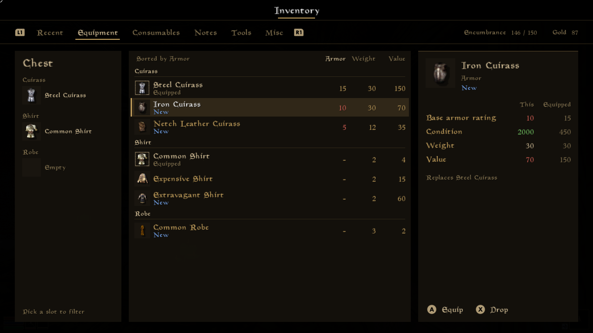
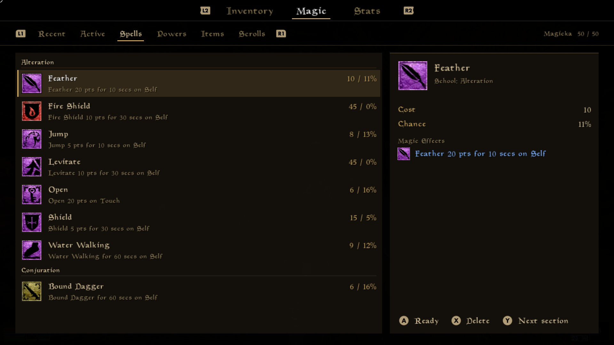
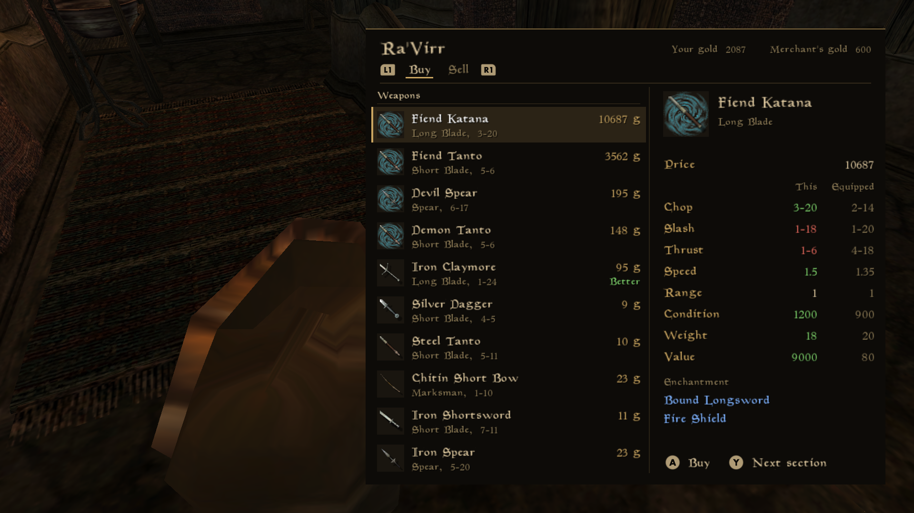
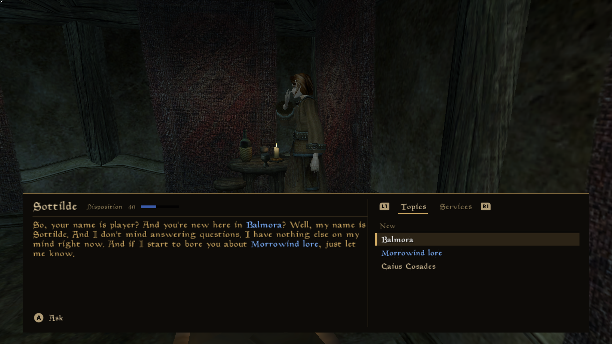
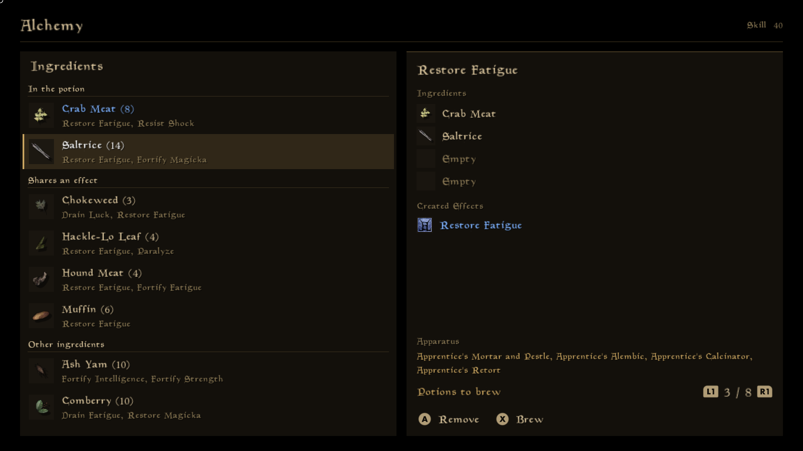
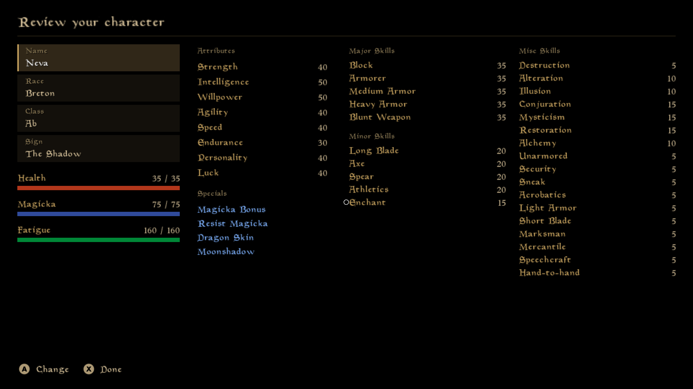

Replacing OpenMW's UI from a Lua mod: the engine changes
These engine changes aim to let a Lua mod replace the whole in-game UI. They give Lua the game rules, actions and input control that the built-in windows use today. To test them, the Modern Morrow controller UI was rebuilt as a Lua mod on top, and its inventory, crafting, dialogue and character creation screens run in the real game.
124 commits on top of upstream master, in 61 planned merge requests:
10,595 lines added and 2,157 removed, including Lua API docs and tests.
Branch full.












Kinds of work
- Lua getter 31 commits
A read-only binding that gives Lua a value the engine already computes. Most call the same function as the built-in window. - Lua action 16 commits
A binding that changes the game. Most check their arguments at once, queue the change with addAction, and check again when the main thread runs it. - Game rule move 26 commits
A refactor that moves game logic out of a GUI window into mwmechanics or the world, so Lua can reach it. The window calls the moved code, and behaviour doesn't change. - Bug fix 12 commits
A fix for a bug in the engine. Most were found while doing this work, and are useful on their own. - Input ownership 3 commits
Lets a Lua menu take the controller and keyboard while a menu is open, so the engine's hidden windows don't act on the same presses. - Lua UI 8 commits
Changes to Lua UI itself, such as layers that scale with the screen, text measurement, fonts, window IDs and the UI interface. - Dialogs 4 commits
Lets Lua show and answer the engine's message boxes and plain messages in its own style. - HUD 4 commits
Lets a mod hide single HUD elements and draw its own, while following the engine's rules for when each one shows. - Dialogue 11 commits
Moves the conversation's state and rules from the Dialogue window into the dialogue manager, and lets Lua read and take part in a conversation. - Character creation 4 commits
Makes the character creation windows into real windows that Lua can replace, and lets Lua apply the player's choices. - Save format 1 commits
A change to what the game writes to a save, with a new save format version. - Engine event 3 commits
A new engine handler or event that tells Lua scripts something happened, so they don't have to poll for it. - Version bump 1 commits
The single Lua API revision bump for the whole stack.
The changes, in commit order
Each section is a planned merge request. Open one to see its commits, and a commit to see its message and diff. The tags give a rough review difficulty and the kind of change.
Milestone 1: Small fixes and read-only getters
Gives a mod values that the engine already computes, such as spell costs, barter prices and whether an item is stolen. These are the smallest and safest changes, so they come first. One of them needed a refactor of the trade window first.
MR 1Skip videos with controller buttonseasy1 commit, +15 −0
Fixes a bug: skippable videos stopped only for Escape. A, B and Start now skip them too.
Skip videos with controller buttonseasyBug fix+15 −0
MR 2Spell costs and success chanceseasy2 commits, +132 −0
Lets Lua read a spell's magicka cost, an actor's chance to cast it, and an enchantment's cast cost. Each calls the function that the built-in windows use.
Add Lua API to read spell costs and success chanceseasyLua getter+80 −0
Add Lua API to read an enchantment's effective cast costeasyLua getter+52 −0
MR 3Barter prices and item valueseasy3 commits, +151 −31
Moves the barter price rules out of the trade window into a new mwmechanics/barter.cpp. Lua can then read buying and selling prices, and an item's value as the engine counts it.
Move the barter price rules out of the trade windoweasyGame rule move+63 −31
Add Lua bindings for barter priceseasyLua getter+72 −0
Add Lua API to read an item's value as the engine counts iteasyLua getter+16 −0
MR 4Whether an item is stoleneasy2 commits, +90 −14
getStolenItemOwners keeps the flag that tells an actor owner from a faction. Lua can then list whom the player stole an item from.
Keep the faction flag in getStolenItemOwnerseasyLua getter+19 −14
Add Lua API to read whether an item is stoleneasyLua getter+71 −0
MR 5Whether the player can resteasy1 commit, +43 −0
Lets Lua read the flags from World::canRest, the check that the rest menu makes when it opens.
Add Lua API to check whether the player can resteasyLua getter+43 −0
MR 6Cell name and date in the save listeasy1 commit, +46 −0
Adds the cell name, the in-game date and time and the player's health to menu.getSaves. The values come from the save header.
Add the cell name and game date to menu.getSaveseasyLua getter+46 −0
MR 7Whether a controller button is boundeasy1 commit, +37 −0
Lets Lua check whether a controller button has an engine binding, so a mod can leave bound buttons alone.
Add Lua API to check whether a controller button is boundeasyLua getter+37 −0
Milestone 2: Game rules moved out of GUI windows, with bindings
Moves the rules of services, crafting, barter, level-up and resting out of the windows into mechanics code, then lets Lua use them. A mod can then do what each window does, not only show it. This comes before any Lua window, because a window that can't act is of little use.
MR 8Training price bug fixeasy1 commit, +1 −0
Fixes a bug: the training window showed one price and charged another when the base price was 0.
Charge the training price that the training window showseasyBug fix+1 −0
MR 9Service prices and training checksmedium3 commits, +404 −102
Moves the prices of training, spells and repairs, and the training checks, into a new mwmechanics/services.cpp. Lua can then read them.
Move the service prices out of the service windowsmediumGame rule move+96 −39
Move the training checks out of the training windowmediumGame rule move+99 −63
Add Lua API to read service prices and training checkseasyLua getter+209 −0
MR 10Buying training, spells and repairsmedium2 commits, +438 −79
Moves the purchases out of the service windows. Global scripts can then buy services by the same rules.
Move service purchases out of the service windowsmediumGame rule move+120 −69
Add Lua API to buy training, spells and repairsmediumLua action+318 −10
MR 11Travel prices and tripsmedium2 commits, +235 −94
Moves the travel rules out of the travel window. Lua can read prices and durations, and global scripts can make a trip with followers.
Move the travel rules out of the travel windowmediumGame rule move+143 −94
Add Lua API to read travel prices and to travelmediumLua action+92 −0
MR 12Spell effect textmedium2 commits, +201 −100
Moves the text of a spell effect, such as "Fire Damage 2 to 20 pts", out of the tooltip widget. Lua can then get the same line.
Move spell effect text out of the spell effect widgetmediumGame rule move+134 −100
Add Lua API to describe a spell effecteasyLua getter+67 −0
MR 13Taking items and pickpocketinghard3 commits, +482 −69
Moves the corpse and pickpocketing rules out of the container window's item models. Global scripts can then take items with the theft rules and pick pockets.
Move the corpse looting rule into itemTakeneasyGame rule move+6 −9
Move the pickpocketing rules into MWMechanics::PickpocketmediumGame rule move+46 −33
Add Lua API to take items and pick pocketshardLua action+430 −27
MR 14Repair and rechargemedium2 commits, +298 −49
Moves the recharge item check into mwmechanics. Lua can read the chances, and global scripts can repair and recharge items.
Move the rechargeable item check into mwmechanicseasyGame rule move+25 −21
Add Lua API to repair and recharge itemsmediumLua action+273 −28
MR 15Enchantingmedium3 commits, +456 −101
Moves the enchanting checks and the cast type rules out of the enchanting window. Lua can read the window's numbers, and global scripts can enchant items.
Move the enchanting checks into MWMechanics::EnchantingmediumGame rule move+110 −65
List the cast types that an item can be enchanted withmediumGame rule move+33 −36
Add Lua API to enchant itemsmediumLua action+313 −0
MR 16Alchemymedium1 commit, +291 −4
Lets Lua read what the alchemy window shows and lets global scripts brew potions by the engine's rules.
Add Lua API to brew potionsmediumLua action+291 −4
MR 17Level-upmedium2 commits, +353 −140
Moves the level-up rules into NpcStats. Lua can read what the level-up window shows, and global scripts can level the player up.
Move the level-up rules into NpcStatsmediumGame rule move+176 −140
Add Lua API to level up the playermediumLua action+177 −0
MR 18Barter with hagglingmedium2 commits, +488 −147
Moves haggling and the barter checks back out of the trade window, where upstream put them in 2024. Global scripts can then make a trade by the engine's rules.
Move haggling and the barter checks into mwmechanicsmediumGame rule move+207 −147
Add Lua API to barter with merchantsmediumLua action+281 −0
MR 19Spellmakingmedium3 commits, +629 −117
Moves the spellmaking rules into a new mwmechanics/spellmaking.cpp. Global scripts can make custom spells, and Lua enchanting uses the same effect checks.
Move the spellmaking rules into mwmechanicsmediumGame rule move+266 −104
Add Lua API to make custom spellsmediumLua action+320 −1
Check the effect rules when Lua enchants an itemeasyLua action+43 −12
MR 20Resting and waitingmedium2 commits, +211 −23
Moves the bed rule into mwmechanics. Global scripts can start a rest, which still runs in the rest window so that autosave and scripts keep working.
Move the bed rule for resting into mwmechanicseasyGame rule move+64 −13
Add Lua API to rest in the rest menumediumLua action+147 −10
Milestone 3: Input ownership and Lua UI layers
Lets a Lua menu take the controller and keyboard, and gives it layers that scale with the screen and a way to measure text. These are the base that every Lua menu needs. It comes after the game rules, which don't depend on it and can be reviewed first.
MR 21Lua menus that capture inputhard4 commits, +169 −12
Starts with a fix for the first controller press after a window is hidden. Then a Lua menu can take the controller and keyboard while a menu is open, through input.setGuiInputCaptured or a registerWindow option.
Fix the first controller press after a window is hiddeneasyBug fix+3 −0
Add Lua API to capture controller input in menushardInput ownership+116 −4
Make the Lua input capture cover the keyboardmediumInput ownership+27 −5
Add a capturesInput option to I.UI.registerWindoweasyInput ownership+23 −3
MR 22Fixed-height UI layers and text measurementmedium3 commits, +190 −9
Adds UI layers with a fixed virtual height that scale with the screen. Adds ui.measureText, which lays out text the way a Text widget does.
Add a fixed-height mode to ScalingLayereasyLua UI+36 −1
Add a height option to Lua UI layerseasyLua UI+57 −8
Add Lua API to measure textmediumLua UI+97 −0
Milestone 4: Message boxes, HUD and main menu
Lets a mod answer the engine's message boxes, hide single HUD elements, and replace the main menu during a game. These are the parts of the UI that aren't regular windows. They build on the input capture of milestone 3.
MR 23Interactive message box on the main threadeasy1 commit, +8 −3
Fixes a bug: I.UI.showInteractiveMessage created MyGUI widgets on the Lua worker thread, which can crash the game.
Create Lua's interactive message box on the main threadeasyBug fix+8 −3
MR 24Lua answers script message boxeshard3 commits, +384 −48
Lets player scripts show and answer message boxes with buttons, such as those from game scripts. GetButtonPressed in game scripts sees the Lua answer.
Allow player scripts to answer interactive message boxeshardDialogs+187 −19
Add I.UI.registerInteractiveMessageHandlermediumDialogs+101 −11
Add buttons and a callback to I.UI.showInteractiveMessagemediumDialogs+96 −18
MR 25Hiding single HUD elementsmedium2 commits, +310 −30
Lets a mod hide single HUD elements, such as the health bars, and keep the rest of the HUD and the engine's messages.
Allow player scripts to hide single HUD elementsmediumHUD+235 −24
Add I.UI.setHudElementVisibilityeasyHUD+75 −6
MR 26Window ID for the main menueasy1 commit, +45 −0
Gives the main menu a window ID so a mod can replace it. This only works during a game, because there are no player scripts before one starts.
Add a Lua window ID for the main menueasyLua UI+45 −0
Milestone 5: Dialogue
Moves the conversation's transcript, topics and rules from the Dialogue window into the dialogue manager. A mod can then show a conversation, take its steps, persuade and ask for services. It comes late because it needed the most refactoring.
MR 27Dialogue bug fixeseasy2 commits, +8 −8
Fixes the record that DialogueResponse names when an NPC refuses. Also stops a Lua-replaced Dialogue window from keeping every conversation's history.
Fix DialogueResponse's recordId when an NPC refuseseasyBug fix+2 −2
Clear the Dialogue window's history when Lua replaces iteasyBug fix+6 −6
MR 28The conversationhard7 commits, +836 −251
Moves the transcript, the topic list, the rules on what the player may say, and topic link finding into the dialogue manager. Lua can then read the conversation and take its steps.
Keep the conversation transcript in the dialogue managerhardDialogue+152 −169
Store the available topics in the dialogue managermediumDialogue+46 −19
Check in the dialogue manager what the player may saymediumDialogue+45 −32
Move finding topic links out of the Dialogue windowmediumDialogue+130 −28
Add Lua API to read the player's current conversationmediumDialogue+249 −0
Add Lua API to ask topics, answer choices and say goodbyehardDialogue+157 −2
Add Lua API to find topic links in a dialogue lineeasyDialogue+57 −1
MR 29Persuasion and dialogue servicesmedium6 commits, +474 −133
Starts with a fix for persuasion's disposition when a conversation ends without goodbye. Then moves the persuasion checks and the service list out of the Dialogue window, and adds Lua persuasion and service requests.
Fix persuasion's disposition when dialogue skips goodbyemediumBug fix+18 −4
Check in the dialogue manager whether persuasion is allowedmediumDialogue+58 −17
Move the dialogue service list out of the Dialogue windowmediumGame rule move+93 −54
Move asking for a service out of the Dialogue windowmediumDialogue+89 −50
Add Lua API to persuade the actor in a conversationmediumDialogue+89 −8
Add Lua API to read and request dialogue servicesmediumDialogue+127 −0
Milestone 6: Character creation
Makes the character creation windows into real windows, moves their rules into mechanics, and lets Lua apply the player's choices. It comes last of the planned work because the windows needed a rework first.
MR 30Character creationhard7 commits, +977 −363
Stops the chargen windows from being rebuilt on every UI refresh, and gives each step a window ID. Moves the class questions, head and hair choices and custom class checks into mechanics, then adds Lua setters for the player's choices.
Stop rebuilding chargen windows when the UI refresheshardCharacter creation+207 −197
Add Lua window IDs for the character creation windowsmediumCharacter creation+69 −1
Move the class questions and scoring into mwmechanicsmediumGame rule move+170 −108
Move the choice of heads and hairs out of the race windoweasyGame rule move+35 −26
Move checking a custom class out of the class windowmediumGame rule move+76 −22
Don't add a class record each time a custom class is mademediumBug fix+12 −2
Add Lua API to create the player's charactermediumCharacter creation+408 −7
Milestone 7: Gaps found while porting the UI
Fills the gaps that porting every Modern Morrow screen to Lua showed. Each merge request is small and stands on its own. These came last because they were found by building the mod on the earlier milestones.
MR 31Weapon skills, gold, soul gems and skill bookseasy3 commits, +135 −0
Lets Lua read a weapon's skill, tell gold and soul gems apart, and check whether the player has read a skill book.
Add the skill of a weapon to its Lua recordeasyLua getter+23 −0
Add Lua API to tell gold and soul gems apart from other itemseasyLua getter+37 −0
Add Lua API to check whether the player has read a skill bookeasyLua getter+75 −0
MR 32Equipment slots and item soundseasy2 commits, +95 −0
Lets Lua read the equipment slots of an item and its pick-up and put-down sounds.
Add Lua API to list the equipment slots of an itemeasyLua getter+54 −0
Add Lua API to read the sounds of picking up and putting down an itemeasyLua getter+41 −0
MR 33Controller button iconseasy1 commit, +42 −0
Lets Lua read the textures that the engine uses for controller button hints, which follow the controller type.
Add Lua API to read the icons of controller buttonseasyLua getter+42 −0
MR 34Dropping itemseasy2 commits, +146 −15
Moves dropping an item out of the inventory GUI. Global scripts can then drop items the way the inventory does.
Move dropping an item into the world out of the inventory GUIeasyGame rule move+37 −15
Add Lua API to drop items from the player's inventoryeasyLua action+109 −0
MR 35onItemAdded engine handlermedium1 commit, +72 −5
Adds an engine handler that tells local scripts when items go into an inventory or container.
Add onItemAdded engine handlermediumEngine event+72 −5
MR 36Spell schools, enchantment charge and a removed spell fixmedium3 commits, +137 −2
Fixes spells that Lua removed from the player coming back after loading. Lets Lua read a spell's school and an enchantment's full charge.
Keep spells that Lua removes from the player removed after loadingmediumBug fix+56 −2
Add Lua API to read the school of a spelleasyLua getter+49 −0
Add Lua API to read the full charge of an enchantmenteasyLua getter+32 −0
MR 37Faction rank skill checkseasy1 commit, +51 −0
Lets Lua check whether an NPC has the skills that a faction rank asks for.
Add Lua API to check the skills an NPC needs for a faction rankeasyLua getter+51 −0
MR 38Requested windows for window replacementseasy1 commit, +48 −3
Passes the list of windows that I.UI.setMode asked for to each window replacement.
Pass the requested windows to I.UI window replacementseasyLua UI+48 −3
MR 39A merchant's goodshard3 commits, +201 −14
Moves finding a merchant's goods out of the trade window. Lua can list them, including owned containers and items in the world, and buy them.
Move finding a merchant's goods out of the trade windoweasyGame rule move+21 −5
Add Lua API to list a merchant's goods and buy themhardLua action+176 −8
Add the merchant's reply to the transcript after a Lua bartereasyLua action+4 −1
MR 40Lua-replaced container closingeasy1 commit, +15 −0
Fixes a bug: an animated container stayed open when a Lua mod had replaced the Container window.
Close the container when a Lua-replaced Container window closeseasyBug fix+15 −0
MR 41Whether an item is boundeasy1 commit, +24 −0
Lets Lua check whether an item is a summoned item, such as a bound dagger.
Add Lua API to check whether an item is boundeasyLua getter+24 −0
MR 42Travel destination names and trainer skillsmedium3 commits, +55 −18
Moves naming travel destinations out of the travel window. Lua can read the names, and the trainer's skill values that training compares.
Move naming travel destinations out of the travel windowmediumGame rule move+26 −13
Add Lua API to read the name of a travel destinationeasyLua getter+3 −0
Add Lua API to read the trainer's skill values that training compareseasyLua getter+26 −5
MR 43Picking up items from the worldeasy2 commits, +83 −8
Moves taking an item from the world into its own function. Global scripts can then pick items up with the theft rules.
Move taking an item from the world into its own functioneasyGame rule move+18 −8
Add Lua API to pick up an item from the worldeasyLua action+65 −0
MR 44Cells where content files place a recordeasy1 commit, +51 −0
Lets Lua list the cells where content files place objects of a record, such as the cell where an NPC lives.
Add Lua API to list the cells where content files place a recordeasyLua getter+51 −0
MR 45Disposing of a corpsemedium2 commits, +133 −54
Moves disposing of a corpse out of the container window. Global scripts can then do it the same way.
Move disposing of a corpse out of the container windowmediumGame rule move+68 −53
Add Lua API to dispose of a corpseeasyLua action+65 −1
MR 46Screen fadeseasy1 commit, +63 −0
Lets Lua fade the screen out and in, the way the mwscript fade functions do.
Add Lua API to fade the screeneasyLua UI+63 −0
MR 47Book text variableseasy1 commit, +26 −0
Lets Lua replace the variables in a book's text, such as %PCName, as the book window does.
Add Lua API to replace the variables in a book's texteasyLua getter+26 −0
MR 48Fonts for Lua texteasy1 commit, +40 −1
Adds a font property to Lua Text widgets and a matching option to ui.measureText.
Add a font property to Lua Text widgetseasyLua UI+40 −1
MR 49Crafting messages and problemsmedium2 commits, +186 −68
Moves the crafting windows' sounds and messages into mechanics, so Lua crafting shows them too. Lua can read why a crafting setup can't be made.
Show the crafting windows' messages when Lua craftsmediumGame rule move+90 −65
Add Lua API to tell why a crafting setup can't be madeeasyLua getter+96 −3
MR 50The item an enchanter takes backeasy1 commit, +15 −1
Lets Lua name the stolen item that an enchanter takes back instead of using it.
Add Lua API to name the item that an enchanter takes backeasyLua getter+15 −1
MR 51Whether the enchant chance is showneasy1 commit, +4 −0
Lets Lua follow the setting that decides whether the enchanting window shows the chance.
Add Lua API to tell whether the enchanting window shows the chanceeasyLua getter+4 −0
MR 52Custom effect limitseasy2 commits, +61 −13
Names the smallest values of player-made effects as constants. Lua can then read all the limits.
Name the smallest values of a magic effect that the player makeseasyGame rule move+18 −12
Add Lua API to read the limits on the effects the player makeseasyLua getter+43 −1
MR 53Rest progresseasy2 commits, +69 −7
Gives the rest's progress bar a window ID, and sends the player an event as the hours of a rest pass.
Add a Lua window ID for the rest's progress bareasyLua UI+22 −5
Send the player an event as the hours of a rest passeasyEngine event+47 −2
MR 54Jail progresseasy1 commit, +39 −1
Sends the player an event as a jail term passes.
Send the player an event as a jail term passeseasyEngine event+39 −1
MR 55Level-up music and rest refusal fixeseasy2 commits, +21 −7
Fixes two bugs when Lua has replaced a window: the level-up music didn't play, and the rest menu stayed open where resting is off.
Play the level-up music when Lua replaces the level-up windoweasyBug fix+10 −2
Close the rest menu when resting is off, also when Lua replaced iteasyBug fix+11 −5
MR 56Who added a journal entry, and wherehard2 commits, +85 −2
Records the actor and the cell for each new quest entry, in save format 42. Lua can then read them.
Record who added each journal entry, and wherehardSave format+71 −2
Add Lua API to read who added a journal entry, and whereeasyLua getter+14 −0
MR 57Plain messages handled by Luamedium1 commit, +89 −3
Lets a mod show the engine's messages without buttons, such as a crime report, in its own style.
Add I.UI.registerMessageHandler to show plain messages in LuamediumDialogs+89 −3
MR 58The HUD's enemyeasy1 commit, +44 −1
Lets Lua read whose health the enemy bar shows and how long it stays.
Add I.UI.getHudEnemy to read whom the enemy health bar showseasyHUD+44 −1
MR 59Whether the engine wants a HUD elementeasy1 commit, +61 −1
Lets Lua ask whether the engine would show a HUD element, such as the sneak indicator, if Lua hadn't hidden it.
Add I.UI.isHudElementWanted to follow the engine's HUD ruleseasyHUD+61 −1
MR 60Custom classes and finishing a chargen stepmedium2 commits, +101 −5
Lets Lua tell a class made in the game from a content file's. Lets Lua end a character creation step the way the engine's window does.
Add Lua API to tell a class made in the game from a content file'seasyLua getter+10 −0
Add Lua API to finish a character creation stepmediumCharacter creation+91 −5
MR 61Lua API revision bumpeasy1 commit, +1 −1
One revision bump for every Lua API change in the stack, until the stack is split into merge requests.